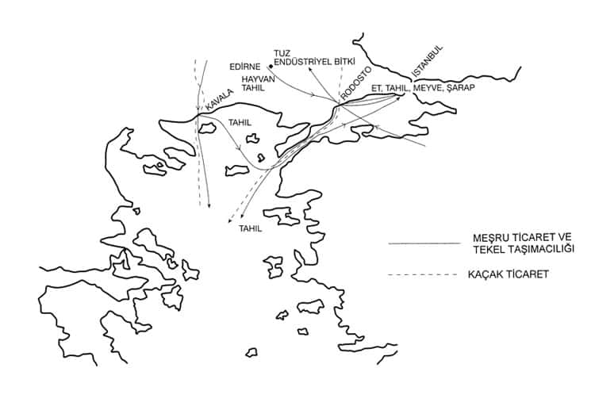

Geleneksel topluma özgü şehir sisteminde, yapı işlerinin niteliği ve örgütlenişi; bugünkü anlamından farklı olduğu kadar, çok kimsenin sanılarının tersine, gerek fonksiyonları gerekse örgütleniş biçimi ve yetkileri bakımından basit bir meslek örgütlenişi olmaktan da uzaktır. Bunun nedenlerini başlıca şu ögelere bağlayabiliriz.
a) Üretici ve kontrolcü grupların ve ilişkilerinin şehir düzeyinde biçimlendirdiği mekân dağılımı ve sosyo-ekonomik yapı;
b) Kent teknolojisinin altyapı tesislerinde, ulaşımda, konut yapısındaki biçimlenişi;
c) Azınlık halkın oturduğu bölgeler üzerindeki sınırlama ve denetim.
Bunlardan başka, askerî yollar ve devletçe organize edilen pazar merkezlerini bağlayan ticaret yollarının tesis ve bakımı da yapı işlerini ve örgütünü düzenleyen önemli öğelerdir. Bu nedenlerle, yapı işlerini yürüten meslek üyeleri, sadece üretici gruplardan lonca örgütüne giren zenaatçılar değil, aynı zamanda devletin merkez ve eyâlet örgütü içinde yer alan bürokratlardır. Birincilerin ücret, emek arzı ve meslekî yeteneklerinin denetimi, ikinci grubun temel fonksiyonudur. Bunun için, 16. yüzyıldan bu yana, yapı işlerinin yürütülmesi için meydana gelen örgütü ve evrimi kısaca gözden geçirmekte fayda vardır. Bu takdirde yapı faaliyeti ve denetim mekanizmasını daha açık görebiliriz.
Her meslek dalında olduğu gibi, devlet bu alanda çalışan loncaları da kendi iç işleyişleriyle baş başa bırakmayıp, kendi örgütüyle de alanlarına el atar. Ancak, kendi normal kadrosu yapı işçilerini denetleyemeyeceğinden, bünyesine aldığı imar kadrolarıyla bu görevini tamamlar. Diğer dallar için böyle bir nitelik pek söz konusu değildir. Örneğin saraç esnafını, debbağları, ciltçi ve hattatları denetlemek için devletin bürokratik kadrolarında mirî saraç, debbağ, mirî hattat veya ciltçi her zaman her yerde böyle bir görev yapmaz, yapamaz. En azından sarayda üretim yapan güzel sanatlarda çalışan zenaatkârın bu tür denetim görevleri olmadığını biliyoruz. Mimarlığın aynı zamanda resmî bir memuriyet olması hali, sırf ülkemizin geçmişteki kurumlaşmasına özgü değildir. Bu örnekleri her ülkenin tarihinde görürüz. Demek ki, mimar mirî binanın yapımı kadar, bayındırlık işlerini de, beledî yapı denetimini de yürüten kişiydi.
Osmanlı İmparatorluğu’nun resmî mimarlık örgütünün başı “Ser Mimârân-ı Hâssâ” olup, diğer memurlara da “Hâssâ Mimârı” denirdi. Unvanlarındaki “Hâssâ” kelimesinin tersine, sadece sarayın yapı işlerini değil, saray dışında merkezde ve eyâletlerdeki yapı işlerini yöneten, denetleyen bu örgüt, esas olarak Yeniçeri Ocağı’nın bir parçasıdır.[102] Mimar Sinan, Davut Ağa gibi klasik Osmanlı mimarîsinin birçok ünlü ustası bu ocaktan yetişmiştir.
Bu aslında şaşılacak bir durum değildir. Hassa Mimar Ocağı, bir mimarlık mektebidir. Uzun seferler, gezilen yabancı ülkeler; yol, köprü, han, hamam, kule gibi tesislerin onarım ve yapımı, bir bakıma mesleğin o sistem içinde en iyi ve en çok üretime yönelik rasyonel bir öğretimi sağlamaktadır. Sanılanın tersine, geleneksel toplumun mimarı, sanatını dar bir kontrolcü sınıfın gösterişçi tüketim değerlerine göre değil, bütün bir sistemin her çeşit yapı gereksinmesine yönelik bir uygulama ile öğrenmektedir.
Hassa mimarlarının en göze batan görevi, hükümdarın ve hanedan üyelerinin binalarının yapım ve onarımını yürütmek, mirî binaların plan ve proje işlerini yönetmektir. Bu nedenle hassa başmimarının mekânı da Topkapı Sarayı’ndaki Sepetçiler Köşkü idi. Hamam, imâret gibi vakıf binalarının, suyolu, bent, köprü, konaklama yerleri gibi beledî ve bölgesel ulaşım tesislerinin yapım ve onarımını yürütmek dahi onların görevidir.[103] Hassa başmimarının kontrolcü fonksiyonunu da göz önüne aldığımızda, bütün bu görevleri imparatorluk çapında tek başına yürütmesine imkân yoktur. Kendisine, emrindeki hassa mimarları gerek merkezde gerek eyâletlerde temsilcisi olarak yardım etmektedirler. Prof. Ş. Turan bunların sayısının 1526-1665 tarihleri arasında 18’den 40’a kadar çıktığını tesbit etmektedir.[104]
Mirî binaların yapımını ayrıntılarıyla açıklayan yol gösterici bir monografik çalışma son zamanlarda Ö. L. Barkan tarafından yayımlandı. Süleymaniye Camii’nin yapımı; işçi, usta temini, muhasebesi vb. gibi konuları kapsayan bu geniş çalışma, bize mimarbaşlarının ve mirî inşaat örgütünün ayrıntıları hakkında da bilgi vermektedir.[105] Bu gibi inşaatlarda çalıştırılacak taşçı, dülger, marangoz, sıvacı ve özellikle kale inşaatında hizmet gören lağımcı ustaları İstanbul’dan temin edilir, ihtiyaç halinde taşradan getirilirdi. Hassa Mimar Ocağı’nda İstanbul ve eyâletlerdeki mimar, kalfa ve sair ustaların defterleri tutulurdu. Gerektiğinde mimar başının teklifiyle divândan hüküm yazılır ve bunların celbi yoluna gidilirdi.[106]
Gerçekten de Ö. L. Barkan, Süleymaniye inşaatında, sermimar Sinan’ın verilen bir fermana dayanarak icabında tezkire gönderip Rumeli eyâletlerindeki kadılar ve sancak beylerinden bazı ustaların bulunup gönderilmesi talebinde bulunduğunu söylüyor.
İmparatorluk dahilinde mevcut bütün inşaat ustalarının en büyük amiri ve reisi olan mimarbaşıların benzeri fermanlarla kendilerine tâbi usta ve esnafın isim ve ihtisaslarının kayıtlı bulunduğu defterden veyahut daha evvel başka bir yapıda çalıştırılarak, ehliyetleri tesbit edilmiş usta gruplarının adres ve hüviyetlerini tesbit etmiş olan listelerden faydalanarak, lüzum hasıl oldukça muayyen sayı ve vasıftaki işçiyi, çok defa isim zikretmek suretiyle istemesi dikkat çekmektedir.[107]
Gene diğer inşaatlarda da bu usul kullanılırdı. Nitekim Büyük Çekmece Köprüsü için duvarcı gerektiğinde aynı usule başvurulmuştur (Aralık 1565’te).[108] Mirî binaların yapımında askerî teşkilâttan da yararlanılırdı. İnşaat süresince ulûfeli olarak kaydedilen acemi oğlanları, yapıda çalıştıkları gibi civar[109] mahalden taş ve sair malzemeyi taşımakta da kullanılırdı.
Hassa başmimarı sadece yapıların ve onarımların teknik yönlerinden sorumludur. Hesap işleri, ücret ödemeleri, malzemenin alım ve temini, kısacası muhasebe ve mubayaa işleri için “şehremini” denen ayrı bir memur sorumluydu. Şehremini unvanı, Tanzimat’tan sonra İstanbul belediye reisleri için kullanılmışsa da, terimi karıştırmamak gerekir. Klasik dönemde bu fonksiyonu yerine getiren şehreminleri her eyâlette vardı. II. Mahmud reformlar çabası içinde bu iki memuriyeti de birleştirecek ve “Ebniye-i Hassa Müdüriyeti”ni kuracaktır ki, üzerinde duracağız.[110]
Eyâletlerde, hassa başmimarının görevini onun tayin ettirdiği hassa mimarları görmektedir. Başmimarın inhasıyla tayin edilen bu memurların[111] görevlerinin sınırı ve eyâlet sistemi içindeki yeri halen iyi anlaşılmamıştır. Bunların başmimarın merkezdeki görevini gördüklerine kuşku yoktur. Kendisine bu konuda müracaat ettiğim C. Orhonlu, bu görevin bazen ocaktan yetişmeyen, fakat liyakatiyle sivrilen mahallî ustalara da bırakıldığını, aralarında gayrimüslim ustaların da bulunduğunu söyledi. Eyâletlerde bu sistem Tanzimat’tan sonra da devam etmiştir. Modernleşen vilâyet teşkilâtında meclis-i belediyelerde mühendis, vilâyet ve liva meclislerinde tarîk ve ebniye mühendisleri yer alırken, aynen klasik devirde olduğu gibi bu uzmanların bulunmaması halinde kalfaların dahi belediye meclisinde müşavir azâ olduğu görülüyor.[112]
Hassa mimarlarının ikinci önemli görevinin de, vakıflara ait bina ve tesislerin onarımını talep üzerine bizzat yönetmek, fakat ön planda bu onarımı teknik bakımdan denetlemek olduğunu söylemiştik. Onarımı denetlemek ilk ve son keşif işlerini yapmak, vakıf mütevellisinin suiistimalini önlemek gayesini güdüyor ki[113] , bu aynı zamanda vakıfları denetleme göreviyle yükümlü olan “kadı”nın, bu önemli fonksiyonunun bir parçasını teşkil etmektedir, inşaat ve tamiratın gereğini keşif ile anlamak ve tasdik etmek bu yönde gerekliydi. Kentlerin suyolu, lağım gibi altyapı tesisleri çoğun vakıflara aitti ve bir vakıf görevlisi olan “su nazırı”nın fonksiyonuydu. Buna rağmen bu tesislerin bakımıyla görevli olan personel, yani “suyolcular ocağı”, hassa başmimarlığı makamına ve Hassa Mimar Ocağı’na bağlı olduğundan, suyolunun bakım ve korunması, inşa ve onarımından yapılacak keşif, yönetim ve denetim, su yolu üzerine usulsüz yapılan binaların yıktırılmasına karar vermek; hassa mimarlarının görev ve yetkilerindendi.[114] Bu gibi konularda kadılar daima hassa mimarlarının oyuna ve beyanına başvurur ve ona göre inşaatı önler ve hatta yıktırırlardı.
Demek ki, kentin genel altyapısal tesislerinin bakım, yapım ve onarımına nezaret, hassa mimarlarınca yerine getirilmektedir. Hiç kuşkusuz kentlerin imar düzenini kadı ve yardımcılarıyla birlikte sağlamak hassa mimarlarının en önemli görevlerindendir. Yangın, pislik, geçit ve suyollarının kaplanmasını önleyecek tedbirler alınır, yani mevcut yapı nizamına uymayan binalara izin verilmez, yapılmışsa yıktırılırdı. Mimarbaşı, maiyyetinde çavuşları olduğu halde atla şehri teftiş ederdi.[115] Örneğin; yapıların şahnişinlerinin geniş olmaması, sokakların kapanmaması, sokakları daraltacak şekilde binaların genişletilmemesi, sur diplerine bina yapılmaması, debbağhane ve çömlekçilerin konut bölgesinde bulunmamaları, dikkat edilecek konulardı. Prof. Ş. Turan, bu nizamın uygulanmasına dair ilginç bir örnek vererek, 1540/946 yılında İstanbul’da surların beşer ziradan daha yakınına yaptırılan binaların (ev-dükkân) yıktırıldığı, ayrıca Mimarbaşı Sinan Ağa ve kadı hükmüyle yanan binaların yerine kârgir bina yapılmasının istendiğini belirtiyor.
Esasen yanan ahşap bina yerine kârgir bina yapılması için sık sık hükümler çıkartıldığı halde buna uyulmamıştır.[116] Şüphesiz ki, bu tür emirlere uyulamamasının başlıca nedenleri arasında, bu tür inşaatta kullanılan malzemenin pahalılığı, kentsel ve bölgesel ulaşımın ilkelliği başta gelmektedir. 16. yüzyıldan beri, ülkemize gelen seyyahlar Türk evlerini tenkit edegelmişlerdir. Mimarlık, sanat olarak kendini ancak, artı ürünün kanalize edildiği mabet, hamam, imâret gibi kamusal binalarda gösterebilmiştir. Geleneksel toplumda merkantil toplumun tersine özel mimarîden çok kamusal binalara para harcanmaktadır. Nitekim 16. yüzyıl sonlarında ülkemize gelen Protestan Alman papazı Salomon Schweigger’in bu konudaki yargısı çok anlamlıdır:
Bütün sahte dindarların eski devirlerden bugüne kadar yapageldiği gibi, Türkler de Allah’ı aldatmak için gösterişli pahalı binalar, mabetler yaparlar. Kendi evlerine özen göstermezler. Oysa biz hakiki inanç sahipleri bu gibi masraflardan kaçınırız. Parayı kendi yararımıza şeylere harcamak daha iyidir.[117]
Bu kendi yararına şeylerden (!) hususi evler, antrepo ve yol, liman tesisleri kasdedildiğine şüphe yoktur.
Buna karşın ileride göreceğimiz gibi, gerek imar nizamı gerekse usta ücreti ve malzemenin fiyat ve kalitesinin tesbiti bakımından, özel konut yapımı tümüyle hassa mimarlarının kontrolündedir. Geleneksel şehrin mekân dağılımında konut bölgelerindeki farklılaşmayı tayin eden faktör, sınıfsal farktan çok etnik farklardır. Bütün benzeri Akdeniz-Ortadoğu şehirlerinde olduğu gibi, geleneksel Türk şehrinde de konut bölgesi renkli bir görünüme sahiptir. Geleneksel mahalle; bir paşa konağının yanında bir suyolcunun hanesinin, ilmiyyeden mahreç pâyeli bir efendinin kâşanesi yanında, basit bir evkaf kâtibinin aşı boyalı mütevazı evinin bulundukları bir mekândır. Bu durum 19. yüzyılın yavaş değişen şehir yapısı içinde de devam etmiştir. T. Gautier şöyle der:
Türkiye’de yırtık pırtık giysili herhangi bir serseri, kahvehanede en şatafatlı biçimde giyinmiş birinin yanında oturabilir ve o, altın işlemeli yenini yanındakinin giysilerine değmemesi için çekmez.[118]
Gerçekten bütün yaşantısıyla geleneksel Türk mahallesi Karagöz perdesini, yani “Şeyh Küşteri meydanı”nı andırır. Azınlık mahallelerinin de böyle bir kompozisyonu olacaktır. Genellikle şehrin periferisinde yer alan bu bölgenin kendine özgü sorunları yanında, yapı denetimi ve nizamı da hassa mimarlarının görev bütününün ilginç bir yönünü meydana getirmektedir.
Geleneksel şehirde azınlık nüfusun artması, artan nüfusun gereksinimine cevap verecek umumî bina ve konut bölgesinin büyümesi arzu edilmez. Bu nedenle yeniden kilise, mektep gibi umumî binalar yapılmasına müsaade edilmez. Mevcutların da genişletilmemesi için onarımın denetlenmesi gerekmektedir.[119] İskân bölgesinin darlığı ve sınırlarının sabit tutulması, azınlık cemaatlerin oturduğu bölgelerde her şeyden önce arsa fiyatlarını artırmaktadır. Bu nedenle dar sokaklar, yüksek yapılar ve yer kazanmak için uzatılan balkon ve sundurmalar bu kesimin temizliğini, suyolu ve lağım gibi tesislerini de tehlikeye sokmaktaydı. Örneğin, fakir aileler yüksek binalar içinde yaşarlardı. Özellikle eski İstanbul’da “Yahudhane” denen yüksek binalar bizdeki ilk sefalet apartmanlarıdır. Bunları bugün tipik “slum” yapıları olarak Balat semtinde görmek mümkündür. Azınlıkların İslâm mahallelerinde oturması Tanzimat’tan sonra bile yasaktı. Nitekim Mihaliç kazasında İslâm mahallesinde ev alan bir Hıristiyan, bu haneyi bir Müslümana satmaya zorlanmıştır (BOA Cevdet, Dahiliye no: 1797 26 Safer 1263/13 Şubat 1847 tarihli bir belge sayısız örneklerden biridir).
Bu durumda azınlıkların umumî binalarının tamiri için özel müsaade almaları ve tamiratın keşif ve denetiminin hassa başmimarınca yapılması gereklidir. Buna göre azınlık cemaatinin vakıf mütevellileri ve muteberânı, nerede olurlarsa olsun, mektep, kilise vs. bir binanın tamiri için Bâbıâlî’ye müracaat ederler. Merkezde mimarbaşı, eyâletlerde hassa mimarları gereken keşfi yapıp tamirin lüzumuna kanaat getirirlerse, bu husus şehrin belediye reisi ve mülkî amiri derecesindeki kadı önünde beyan edilir, kadı bu beyanı kaydedip tamir iznini verir, bu ilk keşiften sonra tamirata başlanırdı. Yalnız tamirattan sonra, yapıya ilâve yapılıp yapılmadığını tesbit için, son keşfin yapılması gerekirdi. Nizama aykırı bir ilâve ve genişletme varsa yıktırılırdı. Bu önemli işin özellikle başkentte ser mimârân-ı hassa başkanlığında diğer hassa mimarlarının katıldığı bir heyetçe yapıldığını görüyoruz.[120]
Burada önemli bir konuya değinmemiz gerekiyor. Genellikle bazı tarihçiler, Islâhat Fermanı (1856) hükümlerine bakarak, Tanzimat’tan sonra hele Islâhat döneminde, gayrimüslimlerin kilise ve umumî bina yapımı konusunda serbest bırakıldıklarını ileri sürmektedirler. Bu, her şeye rağmen Osmanlı idaresinin ve Osmanlı memleketlerinin bünyesel özellikleri ile de çelişkili bir durum yaratırdı. Şöyle ki; Rum-Ortodoks kilisesinden ayrılmak isteyen Bulgarların her yerde Eksarhlık kiliseleri kurmaları, Katolik kilisesine geçen bazı Bulgarların bu tür faaliyeti ve gene Protestan kilisesine geçen reâyânın her yerde kilise ve okul inşaatına başlaması, önce diğer cemaatlerin hasetini, kinini ve reaksiyonunu kışkırtırdı. Bu tür çatışmalara Osmanlı idarecilerinin tahammülü yoktu. Bundan başka, ne hükümet mekanizması ne de azınlık cemaatler bu konuda eski alışkanlıklarından kolayca vazgeçebilmişlerdir. Bizim Başbakanlık Arşivi, Şer’î Siciller ve Takvîm-i Vekâyî koleksiyonlarında rastladığımız belge ve kayıtlar da bu yargımıza tanıktır. Örneğin; 25 Cemaziyelâhir 1272/3 Mart 1856 tarihli bir hatt-ı hümâyûn, inşaat hakkında gereken ruhsatın, cemaat metropolitleri ve hahambaşılar aracılığıyla Bâbıâlî’den alınmasını bildirmektedir.[121] Gene 12 Şaban 1289/15 Ekim 1872 tarihli bir arzuhal, Yedikule Mirahur mahallesi Rumlarının bir kıraathane binasını mektebe çevirmek için acele müsaade istediklerini, müsaade çıkana kadar tavan örtülmemek şartıyla duvarların yapılması için müsamaha edilmesini rica ettiklerini gösteriyor. Belge, bu bürokratik işlemin uzunluğunu ve safahatını göstermek bakımından da ilginçtir.[122] (Bkz. Belge 1.)
Osmanlı hükümet teşkilâtının, ıslâhattan sonra da gayrimüslim cemaatlerin tamir veya yeniden inşa ettirdikleri eserlerin istatistiğini titizlikle tuttuğunu gösteren bir pusulayı aynen vermekte fayda vardır.[123] (Bkz. Belge 2.)
Anlaşılacağı üzere Islâhat Fermanı’ndan sonra bu konudaki eski katı denetim hafiflemişse bile, imparatorluğun 19. yüzyıldaki etnik nedenli karışıklıkları, muhtelif cemaatlerin ortaya çıkıp hak talebinde bulunmaları, gerçekte dolaylı olsa da eskisi kadar sıkı bir denetimi gerektiriyordu. Taşrada da eski usulün devam ettiği görülmektedir. Nitekim, 5 Rebiülâhir 1290/2 Haziran 1873 tarihli bir tahrirat; Balçık kazası Kafovinos köyü Bulgarlarının bir küçük kilise inşası için başvurduklarını[124] gene; 7 Zilkade 1282/24 Mart 1866 tarihli bir mukteza da “Kesriye kasabası Rum ahalisinin harap olan sıbyan mektebini münasip mahalle nakil ile yeniden tamiri”[125] için başvurduklarını gösterir.
Gerek kilise tamiri, gerek yeniden okul inşa veya tamiri gibi konularda hayli müracaat vardır. Nitekim merkezî hükümet bu konuyu teferruatıyla düzenleme ihtiyacını duymuş ve mahallî idarecilere bu konudaki talimatı içeren fermanlar göndermiştir. Şüphesiz ki, mahallî yöneticilerin en teferruatlı konular için bile, müracaatlara merci olmaktan çekinmeleri ve en ufak tamirat konusunda dahi Bâbıâlî’ye sayısız müracaatın yapılması bunda rol oynamış olmalıdır. Nitekim Anteb Şer’iyye Sicilleri’nde rastlanan ve Anteb kazası yöneticilerine gönderilen bir fermanda, kiliselerin esaslı onarımları veya yıktırılarak yeniden yaptırılması isteklerinde, mimar tarafından yerinde yapılacak keşifle düzenlenecek evrakın, bir dilekçeyle Bâbıâlî’ye bildirilmesi, kiremit aktarma, sıva gibi işlerde buna lüzum olmadığı bildiriliyor.[126] En ufak tamirat bile kırtasiye ve merkezî izin bahanesiyle savsaklanmış olmalıdır. Esasen, önemli yapısal değişiklikler olmadıkça, dış baskıyla getirilen yeni statü ve vaatler, radikal bir değişiklik yaratamazdı. Şehirlerin bu kesiminde geleneksel imar düzeninin devamını bunda aramak gerekir.
Bu bahisten sonra asıl konuya dönelim. Hassa mimarlarının kontrolcü fonksiyonu başka konuları da içerir. Askeriye silki içindeki yerlerine uygun olarak savaşa katılırlar, gerekli kaldırım, köprü inşa usta ve amelelerini temin ederlerdi. Hassa başmimarı ordunun hareketinden evvel maiyyetiyle yola çıkar ve güzergâhtaki tesisleri onarırdı. Bu aslî bir görevdir.[127] IV. Murad’ın Bağdat Seferi’nden önce, kısa zamanda taş yol döşendiğini biliyoruz. Ancak bütün yatırım ve inşaatlar ulaşım sistemini meydana getiren normal kervan yolları için söz konusu olmayıp, askerî amaçlıdır.
Geleneksel toplumda, üretici sınıf içinde yer alanlar kuşkusuz, tarımcılar ve kentlerdeki zenaatçı esnaf gruplarıdır. Zenaatçıların içinde, inşaat işleriyle uğraşan loncaların üzerindeki kontrol da, ihtisas sahibi bürokrat bir grup tarafından yapılmalıdır. Bu önemli fonksiyonun hassa mimarlarınca yerine getirildiğini yazının başında belirtmiştik. Bir denetim görevi tüm imparatorluk düzeyinde hassa başmimarı ve maiyyetince yerine getirilmekte ve başlıca:
a) İşçi ve usta sayısı,
b) Ücretler,
c) Yapı malzemesinin kalite ve fiyatı üzerinde uygulanmaktadır.
Bilindiği üzere geleneksel toplumda, işçi ve usta sayısı bütün zenaat dalları için kesindir ve “gedik” adını alır. Her daldaki sayı, etnik dinî farklılıklara göre değil, işgücü arzında fazlayı önleme prensibine göre ayarlanır.[128] Fakat bu sayının usta ve düz işçi için dondurulması, özellikle büyük yangınlar ve benzeri olaylardan sonra inşaat alanında doğan işgücü sıkıntısı dolayısıyla çok zaman uygulanamamıştır. Gene ücretler de buna bağlı olarak resmen tesbit edilen miktarın çok üzerine yükselmiştir. Özellikle başkente böyle zamanlarda taşradan gelen “bekâr tâifesi” inşaatlarda çalışmaya başlamış, ne ücretlerde ne de çalışanların miktarında kontrol kurulabilmiştir. Çıkan hükümler fazla ücret ödeyenleri de menetmek istemektedir.
İstanbul’da ve eyâletlerde, yapılarda, yol ve kaldırım işlerinde çalışacak usta ve kalfalar, hassa başmimarından ve hassa mimarlarından icra-i zenaat için bir “ehliyet belgesi” almak zorundaydılar. Böyle bir belgesi olmayan faaliyet gösteremezdi. Gene usta ve işçi ücretleri de inşaat ve para değerine göre tesbit edilirdi.
Ücretler Rûz-ı Hızır (6 Mayıs-18 Aralık) ve Rûz-ı Kasım (15 Aralık-5 Mayıs) devreleri için yılda iki döneme göre tesbit edilirdi. Prof. Ş. Turan 1742 yılı için tesbit ettiği fiyatları şu şekilde sıralıyor[129] :
| Hızır Günleri 6 Mayıs-18 Aralık | Kasım Günleri 15 Aralık-5 Mayıs15 | |||
| Kalfa | 60 | akçe | 55 | akçe |
| Kârhaneci | 50 | akçe | 45 | akçe |
| Usta | 45 | akçe | 40 | akçe |
| Şakird | 30 | akçe | 25 | akçe |
| Duvarcı | 40 | akçe | 35 | akçe |
| Lağımcı[130] | 40 | akçe | 35 | akçe |
| Sırık hamalı | 30 | akçe | 24 | akçe |
| Rençber | 24 | akçe | 20 | akçe |
Bu ücretlerin, yukarıda belirttiğimiz nedenler dolayısıyla oldukça sert biçimde tatbikine dikkat edildiğini bilmeliyiz. Diğer zenaatçı esnaf için de tesbit edilen narhı ve ücreti uygulamak söz konusudur. Ancak alıcı ve satıcı ilişkilerinin yaygınlığı, geleneksel şehir üretiminin kontrolünü de daha etkin kılmaktadır. Oysa yapı işlerinde bilhassa işgücü arzının kıtlığı, yüksek ücretlerin müşterilerle anlaşarak daha kolay ve kontrolden uzak bir biçimde yüksek miktarda teşekkülünü kolaylaştırmaktadır. Hassa başmimarı, yapı malzemesinin kalite ve fiyatını da tesbitte mühim rol oynar. Diğer zenaatçı için narh tesbitinde kadı ve muhtesib, kontrolcü bürokratik grubun temsilcileri olduğu halde, inşaat işlerinde narh ve ücret tesbitinde hassa mimarı da onların yanında yer alır. Bundan başka yapı işleri zenaatçıların ve malzeme satan esnafın lonca temsilcileri de narh tesbitine katılır. Mimarın beyanı ve oyu her zaman için önemlidir.
Daha önce söylediğimiz gibi II. Mahmud, 1831’de, Şehreminliği ve Mimarbaşılığı, Ebniye-i Hassa Müdüriyeti adı altında bir merkezî organda birleştirdi. Bu makam sonraki dönemde Nâfıa Nezareti ve Şehremaneti arasında gidip geldi. Esasta fonksiyonların aynen devam ettiği söylenebilir. Gayrimüslim mahallelerinde inşa faaliyeti, işçi ücreti, malzeme fiyatları, eyâletlerdeki imar faaliyetleri ve bölgesel yol ve tesisler üzerindeki denetim ve yönetimi, esasta aynen kalmıştır. Nitekim Takvîm-i Vekâyî’den aldığımız bir tebliğ, bu örgütün işçi ve usta ücretleri üzerindeki kontrolünü göstermektedir. Bu tebliğde, inşaat işçi ve usta yevmiyelerinin sınırlandırılarak, müsait eyâletlerden külliyetli miktarda amele ve ustanın İstanbul’a celbedildiği, ücretin ise bütün esnaf kethüdaları ve inşaat kalfaları hazır bulunduğu halde Nâfıa Meclisi’nde kararlaştırıldığı, bu nedenle fazla ücret talebi halinde Nâfıa Meclisi’ne şikâyet edilmesi gerektiği beyan ediliyor ve tesbit edilen günlük ücretler de şöyle ilân ediliyordu:[131]
| Neccar[132] ve silicitd | 20 | kuruş |
| Neccar çırağı | 12 | kuruş |
| Hamamcı ve duvarcı | 16 | kuruş |
| Taşçı | 18 | kuruş |
| Nakkaş ve sıvacı | 18 | kuruş |
| Lağımcı ve hırvat | 13 | kuruş |
| Hammal | 12 | kuruş |
| Rençber | 10 | kuruş |
| Tekneci | 8 | kuruş |
| Kaldırımcı | 15 | kuruş |
| Suyolcu | 15 | kuruş |
Esasta yapı işlerini yürüten grupların, üretici ve kontrolcü fonksiyonlarını yerine getiriş biçiminde büyük farklılaşmalar olmadığını görüyoruz. Ne var ki, 19. yüzyılın ikinci yarısından sonra liman şehirlerinin geçirdiği yapısal değişikliği göz önüne almak zorundayız. Kuşkusuz Selanik, İzmir, İstanbul gibi limanlarda geleneksel mekân organizasyonu değişikliklere uğradı. Bu konut alanının kontrolünde, yol ve altyapı hizmetlerinde bazı değişiklikleri de getirdi. Bununla beraber bu şehirlerde bile bir endüstrileşme olmayışı, değişikliği dar alanlara has bir olgu haline getirir. Örneğin, İstanbul’da, Galata-Beyoğlu kesimi dışında önemli değişiklik görülmez. Gene, taşra şehirlerinde kentsel yapı yavaş değişmekteydi. Bu nedenle geleneksel mekanizma geniş ölçüde devam etmiştir.
Şehirsel yapının bu özelliği, belediyelerin güçlenip gelişmesini önlemiş, imar işlerinin düzenlenmesi ve kontrolü bu nedenle daima devlet teşkilâtının elinde kalmıştır.
Belge 1
Azınlıkların genel binalarının yapım ve onarımı için Bâbıâlî’den özel izin almaları gerekirdi. Tanzimat’tan ve Islâhat’tan sonra da bu durum devam etmiştir. 1289/1872 tarihli Yedikule Mirahur mahallesi Rumlarının bir kıraathane binasını okula çevirmek için izin istediklerini gösterir bir belge.
Saâdetlu efendim hazretleri,
Mîrâhûr mahallesinde etfâle mahsûs, inşâsı tasavvur olunan mekteb ebniyesinde bundan akdem kilisamıza akar olmak üzere kırâathâne inşâ itmek içün lâzım gelen tuğla ve kireç ve horasan ve eşyâ-ı sâiresi tedârik olunarak mübâşeret olunmak üzere iken, ahâlîmiz muteberânı tarafından kırâathâneden sarf-ı nazarla mekteb inşâ olunmasına karâr virilerek Bâb-ı âlî cânib-i sâmiyyesine bir kıt’a takrîr bi’t-takdîm, emânet penâhîlerine havâlesiyle mahallinde mazhûrdan sâlim olduğu halde, keşf ve muâyenesi bi’l icrâ badehu irâde-i aliyye-i cenâb-ı pâdişâhî sûdûruna değin tevfîz-i nizâm kâidesinden bulunduğu ve bu ise taraf-ı bendegânelerine küllî zarâr ve ziyân vireceğinden Merâhim-i Aliyye-i emânet penâhîlerinden mercûdur ki, irâde-i şâhânesi sûdûruna değin ebniye-i mezkûrun yalnız temel ve etrâf-ı erbaa dîvârları inşâ ve ikmâl olunmuş ve derûnuna giriş ve döşeme ve sakf (tavan) yapılmamak üzere sâye-i irâde-i şâhâneleri sûdûr itmez ise, mekteb inşâsından sarf-ı nazarla kırâathâne veyâhûd hâne şekline konmak üzere ahâlîce bir kıt’a sened takdîm idecek olduğumuz ve sâir bir mahalden dahi davâcı zuhûr ider ise paydos ideceğimize cümlemiz tarafından taahhüd olunacağından ber mûcib-i muharrer ebniye-i mezkûreye müsâade-i seniyyelerinin erzân buyurulması (müsâade edilmesi) niyâzımız bâbında emr-u fermân hazret-i men leh’ul emrindir.
fi 12 Şa’ban sene (12) 89
bendeleri
bi’l-cümle mîrâhûr mahallesi Rûm milleti ehâlisi kulları
Belge 2
Osmanlı hükümet teşkilâtının Islâhat’tan sonra da gayrimüslim cemaatlerin tamir ve yeniden inşa ettirdikleri binaların istatistiğini titizlikle tutmaya devam ettiklerini gösterir bir pusula.(*23)
Kaynak: BOA; Cevdet Dahiliye, no: 11726, pusula.
Piskoposhane, Papashane,
Hastahane, Hahamhane
| Cemaat | İnşaası için emr-i âlî | Yeniden tamir için emir | Mektep inşaası için emir | Mektep tamiri için emir | Yeniden kilise inşaası ve tamiri için emr-i âlî |
| Rum | 3 | 15 | 24 | 804 | 725 |
| Ermeni | 1 | 8 | 11 | 31 | 44 |
| Katolik(*24) | 1 | 1 | 2 | 6 | 35 |
| Yahudi | 1 | - | 2 | 8 | 8 |
| Bulgar | - | - | 1 | 1 | 24 |
| Kazak | - | - | - | 4 | 5 |
| Protestan | - | - | 2 | 2 | 11 |
| Latin | 1 | - | 1 | 13 | 18 |
| Keldanî | |||||
| Süryanî Yakubî | - | - | 1 | 1 | 8 |
| Frenk | - | - | 6 | - | 4 |
| Ulah, Moldavan ve Livon | - | - | - | - | 4 |
| Yekûn | 7 | 24 | 50 | 870 | 886 |
“Bâ irâde-i seniyye, Islâhat emr-i âlîsi tarîhi olan ikiyüz yetmiş iki senesi evâil-i Cemaziyelâhir’den işbu seksen üç senesi şehr-i Z gurresinden değin milel-i muhtelife taraflarından Memâlik-i Mahrûsa-ı Şâhânede müceddeden ve tevsîân binâ ve inşâ olunan kilisa ve mekteb ve piskoposhane mikdârını mütebeyyindir.”
Belge 3
İnşaat işçi ve ustaları arasında sayılan doğramacıların, devletçe organize edilerek yangınlarda bina yıkma için kullanıldıklarını gösteren bir belge.
Kaynak: Başbakanlık Arşivi, Cevdet Dahiliye, sayı 5336
Buyruldu
Hazine-i âmire defterdârı saâdetlü efendi hazretleri; mûcibince tanzîmine himmet ideler. Fi 17 Ramazân 1255.
Dâr-ül-hilâfet-ül Âliyye ve havâlîsinde vukû bulan harîklere memûr neccâr amelesinin istimâl eyledikleri marangoz baltalarının birazı zâyi ve birazı dahi muhtâc-ı ta’mîr olmak ve amele-i mersûmeden harîk mahallerinde baltası şiken olanlara virilmek üzere müceddeden mübâyaası lâzım gelen elli aded baltanın ma’e kabza beheri yirmi sekiz guruşa ve mevcud ve müsta’mel bulunan yüz aded baltanın beherinin ta’mîri ellişer paya kat’ı pazar olunmuş olduğundan bahisle icâbının icrâsı mütevakkıf-ı irâde-i aliyyeleri idügini ebniye-i hassa müdîri efendi kulları Bâbıâlî’ye bi’t takdîm fermân-ı sâmileri su’dûriyle savb-ı çâkeriye havâle buyurulan bir kıt’a takrîrinde inhâ itmiş ve müdîr-i mûmâileyh marifetiyle ikiyüz kırk sekiz târîhinde mubâyaa ve tanzîm olunmuş olan ma’e kabza yüz aded gülenkli harîk baltasının beheri ondörder guruşdan îcâb iden behâsı hazîne-i âmireden virilmiş olduğu emsâlinden idügi mâliye muhâsebesi derkenârında gösterilmiş ve müdîr-i mûmâileyhin takrîrinde muharrer mubâyaa olunacak elli aded baltanın ma’e kabza beheri yirmi sekizer guruşdan ve ta’mîr olunacakların beheri ellişer paradan hesâb itdirildiği vechile cem’an îcâb eden behâsı bin beşyüz yirmibeş guruşa resîde olmuş olmağla bu suretde zikr olunan baltaların ber minvâl-i muharrer mubâyaa ve ta’mîri muvâfık-ı irâde-i aliyyeleri buyurulduğu halde muhâsebe-i merkûmeye kayd ile meblağ-ı mezbûrun hazîne-i âmireden itası içün sûretinin tahririyle tanzîmine ibtidâr kılınacağı ma’lûm-u devletleri buyuruldukda, emr-u fermân hazret-i men leh’ul emrindir.

Tekirdağ (Rodosçuk) ve çevresi ticaret yolları.